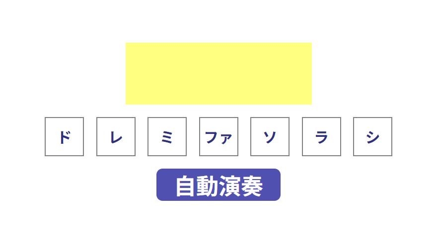
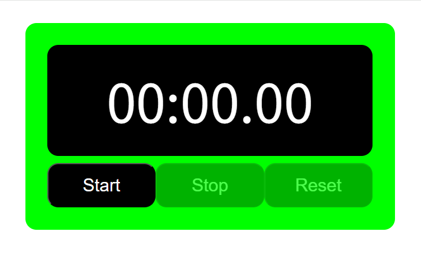

自己紹介
Self Introduction
私の名前は佐藤優です。大阪府に約20年住んでいますが、岡山県生まれの広島県育ちです。現在、ディーキャリアITエキスパート京橋オフィスにて、プログラミング学習や、障害特性への向き合い方、社会人として必要な知識を学ぶ訓練に取り組んでおります。
また、「広汎性発達障害」の診断が出ています。
よろしくお願いいたします。
スキル
Skills
- HTML/CSS
- JavaScript
趣味
Favorites
- 天気/気象
- 鉄道の撮影
- テレビゲーム
実装サンプル
Sample
画像ギャラリー
朝の虹
数年前の朝、自宅の西の空に現れた虹です。
夜桜と月
数年前に撮影した、自宅のマンション内にある桜と月のコラボレーションです。
野生の鳥
地元でよく見かける野生の鳥です。写真のように、マンション内の手すりに止まることもあります。
阪急電鉄の特急
大阪と京都を結ぶ、阪急電鉄の特急列車です。京都の文化を取り入れたデザインになっています。
訓練課題
JavaScript：簡易ピアノアプリ
機能
手動演奏機能
①鍵盤を押下すると、黄色の枠内に押された音名が1秒間表示されます（以下、この挙動を「演奏」と表記します。別の鍵盤を押下すると音名はすぐ置き換わります。）。
自動演奏機能
①「自動演奏」ボタンを押下すると、「きらきら星」「チューリップの歌」「カエルの歌」の3曲のいずれかがランダムに演奏されます（以下、この挙動を「自動演奏」と表記します。）。
②「演奏中止」ボタンを押下する、もしくは演奏が最後まで終わると、自動演奏は終了します。
※自動演奏中のみ、「自動演奏」ボタンは「演奏中止」ボタンに切り替わります。
※自動演奏中は、画面上部に「自動演奏中です：曲名」と表示されます。
※自動演奏中は、鍵盤を押下できません。
工夫点
見やすいかつほどほどに鮮やかなデザインとなるような配色にしました。また、音名表示の場所は、注目されやすいよう柔らかい黄色としました。なお、音を鳴らすのではなく音名を表示させるのみであるため、曲は簡単なものにしています。
JavaScript：ストップウォッチ
機能
①初期状態では、上の画像のような表示になっています（薄くなっているボタンは押下できない状態です）。
②「Start」ボタンを押下時、計測を開始します。
③「Stop」ボタンを押下時、計測を一時停止します。
④再度「Start」ボタンを押下時、計測を再開します。
⑤「Reset」ボタンを押下時、初期表示に戻します。
※表示形式は「分 : 秒 . ミリ秒」で、2桁表示にしています。
※「Start」ボタンは、計測中は押下できません。
※「Stop」ボタンは計測していない状態では押下できません。
※「Reset」ボタンは、計測を一時停止している状態でないと押下できません。
工夫点
ポートフォリオの一部として、統一感が出るよう青色の系統を採用しました。（今後変更予定）